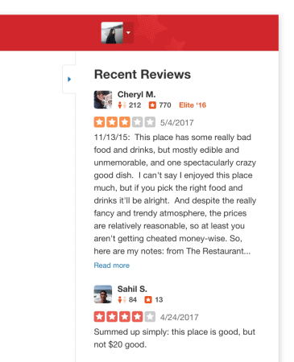

Redesigning Yelp's Web Review Flow
May–October 2017
By my second year working at Yelp, the review compose page on desktop hadn't been touched in a number of years despite it being the source of 40% of Yelp's reviews. In addition to giving the flow an overall visual refresh, I was tasked to optimize for sign-up conversions and increased review length as well as reduced page bounce rate. The final design resulted in a conversation rate that was 3% higher than the old page design!
Project Goals
At the time, the Write a Review page on web saw a conversion rate of 36%. In other words, of the people who visited this page, only 36% of them followed through with post a review. We saw an opportunity to increase this metric by making a number of improvements to the experience.
Functionally, there weren’t many things wrong with the usability of the existing page. In our guerilla usability tests, all participants were able to successfully write and submit a review. (Whether they wanted to or not was a different story.) My focus, then, was mainly on decluttering as much as I could so the user could focus on writing their review.

Recent Reviews
On my list of things to remove from the page, recent reviews that other people had written about the business was on the chopping block. However, we had no idea if people actually found these helpful, so we couldn’t justify taking them away. Instead, I put the reviews in a collapsible panel, not only so users could easily hide them but also so we could keep track of when they did. Win-win!
Survey Questions
The survey questions we asked on this page accounted for X percent of the business attribute information (Good for Kids, Takes Apple Pay, etc.) that we aggregate from our users. We made a hard decision to move these questions to the post-review flow, freeing up a good amount of real estate from the page and cognitive load on the user.
Other Distractions
Our users had no need to use the search bar when writing a review, so eliminating it was an easy decision to make. The decision to remove the business information, however, was not such an easy choice. In our guerilla user study, we saw that some partcipants had opened up the business in a new tab to reference photos of the business and other information. While I wanted to explore pulling out some of that helpful information and putting it on the review page, we decided to save that exploration for another project, and I instead simplified the business “passport,” as we call it, to just the name of the business that links to the business’s Yelp page in a new tab.
The first version of the page we tested saw a 4% drop in conversion rate.
v1 Results
The first version of the redesign that we tested with 20% of our users ended up showing a 4% drop in conversion rate. Determined to find the problem, I ran a formal usability test on the new design but found no significant usability problems. Instead, we heard one of our participants voice a different concern:
I don’t really like writing reviews. Writing all those words makes it feel like an assignment.
Though this could easily be brushed off as something we couldn’t fix with the redesign of this page, there was an important notion behind this participant’s sentiment: the perception of the amount of work it takes to write a review. This supported a hypothesis we had behind why the new design showed a drop in reviews: that the large, blank canvas we were presenting to users to write their review was intimidating and possibly made more users change their mind about wanting to write a review.
Reintroducing the bounding box around the review saw a 3% better conversion rate than the old page.
v2 Success!
To mitigate the impression of dauntingness that the new, cleaner design was giving off, I simply reintroduced the bounding box around the review and set the height to fit 700 characters, the length of a review that we consider to be ideal. The resulting design saw a conversation rate that was 3% higher than the old page! Lesson learned: sometimes too much minimalism can be a bad thing.